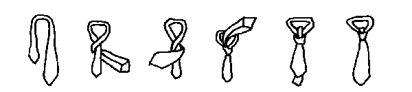
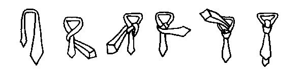
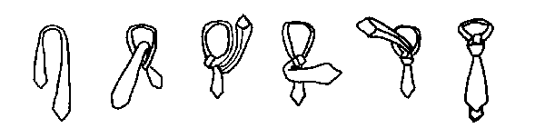
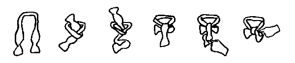

SECTIONS
Tips on buying your first suit
Finding a store and a helpful salesperson
Points to consider when buying a suit
Fabric
Style
Cut
Color
Fitting the suit properly
For men who are binding
How the suit should look
Accessories (shirts, shoes, socks, belts, ties)
How to tie a tie (with diagrams)
Some say that every man should own at least one nice suit. You might find you need one for formal occasions such as weddings and funerals, or maybe you work at a job that requires business attire and you'll need several suits to rotate in your wardrobe.
This chapter is meant to help you choose wisely and speak with confidence while shopping for a suit. The information herein is an introduction-- there is much more to know about suits and classic men's attire. If you have further interest in the topic, you may wish to consult one of the books listed in the final section of this chapter (Resources).
Finding a store and a helpful salesperson
Buying a suit for the first time can be daunting, especially if you have
little experience with the topic. The whole process is made much easier and
more enjoyable if you find a friendly and knowledgeable salesperson to assist
you. If you want a suit that looks good and fits comfortably, be prepared to
spend a good deal of time with your salesperson, and don't be afraid to ask
questions or speak up when something feels odd or uncomfortable. If you aren't
working well with a particular salesperson, don't hesitate to try another store
or find someone else to assist you--it will be worthwhile to find a person who
will really take an interest in helping you.
A good way to find a knowledgeable salesperson is to ask a well-dressed friend
or relative where they purchased their suit. You could even ask a well-dressed
stranger--many men are happy to give referrals if they have found a store or
salesperson they especially like.
If you cannot get a referral, you might want to try a popular men's store such
as The Men's Wearhouse, a reputable menswear shop in your town,
or the menswear section of a major department store.
If you are a man who is smaller in stature, you might want to check the Men's Clothing for Short and Small Guys page for a list of retailers who specialize in short men's clothing and custom-made clothing. A number of these retailers feature suits and formal wear.
Points to consider when buying a suit
When shopping for a suit, consider fabric, style and cut, color, and having
the suit fitted properly. You should also consider the accessories you'll need
with a suit, such as a dress shirt, a tie, a belt, and a good pair of shoes.
Keep those items in mind and mention them to your salesperson when considering
your budget.
Although retailers often recommend buying the best suit one can afford, when
it comes to first-time suits, it may be wiser to hold back. This is especially
true for trans men who have just started testosterone, as their bodies will probably go through
some major changes (much like any man experiences going through puberty). It would be a shame to grow out of an expensive suit
in less than a year! This is not to say that you should buy the cheapest suit
off the rack-- you should still look for quality and a good fit whenever possible.
Discuss your budget constraints with your salesperson, and have him or her guide
you to your best options within that range.
A note for those on a very strict budget: You might want to visit a menswear store to have your measurements taken and to get a general education
on fabric, cut, and how a good suit should look and feel on your body. Then you
can take this information and visit a thrift store to find a suit that fits
reasonably well, and spend a little money to have it fitted properly by a tailor. Thrift stores may have a decent selection of good wool suits (some worn
only a few times) at very reasonable prices. (Please note: If you can afford to buy something at the store where you got your measurements taken, then do so-- even if you can only afford a pair of socks, shoelaces, or a tie. This is the least you can do to thank them for their time in measuring and helping you.)
Fabric
It is highly recommended that your first suit be made of 100% wool. Wool
is a natural fiber that breathes, which means you'll be more comfortable and
you'll sweat less than in a suit made of man-made materials. Wool is also durable and travels well.
Fabrics other than wool have their drawbacks, and probably should not be considered
for a first suit, unless there is no alternative. Polyester suits should be
avoided, as they do not breathe, but if you need to keep costs down, a polyester/wool
blend might be a reasonable choice.
Look for suits made of 100% "worsted" wool. The worsting process involves
selecting long wool fibers and twisting them into tight and resilient yarns.
Worsted wool suits are durable, hard-wearing, and usually fine for wear in all
seasons.
As for the weight of the fabric, the mid-weights are best overall for year-round
wear, unless you live in a very warm climate. If you do happen to live in a
very warm or very cold climate, ask your salesperson about your best options
in fabric weight.
Style
For a first suit, it is generally safe to stick with a basic single-breasted
style, where the jacket buttons in front in a single row of buttons, rather
than a double-breasted suit, where the material folds over itself with two rows
of buttons. Single-breasted jackets come in a variety of styles, including the
classic two-button and modern three- and four-button styles. Always leave the
bottom button on a single-breasted jacket undone. A vest is not necessary.
Cut
The cut of a suit refers to how the suit sits or hangs on your body. Suits
can be broken down into three basic cuts:
1. The American cut. First introduced by Brooks Brothers in 1895, it features a boxy silhouette, straight hanging lines, natural shoulders (no padding), flap pockets, and a single center vent in the jacket. The American cut is a classic cut that is a fine choice for a first suit.
2. The British cut. This cut is more shaped than the American suit with slightly pinched waist, double vents, higher armholes, padded shoulders, and flap pockets.
3. The European cut (Italian). Sleek, modern, with padded shoulders, no vents, flapless pockets, and tapered waist (V-shape) on the jacket.
Of course, these are simply basic descriptions; there are many variations in the way suits are cut and styled. For example, another popular cut variation in recent years is the "executive cut," which allows for more room along the waistline for those men who carry more weight in their belly.
The important thing when considering cut and style is to find a suit that fits and flatters your particular body type, and that is "classic" enough in its styling that it won't go out of style next season. Ask your salesperson to help you find a good, basic cut and style that will wear well for you on many occasions.
Color
For your first suit, it is advisable to stick with dark, solid colors such
as charcoal gray, black, or navy blue. If you are buying an additional suit
or suits beyond your basic solid colors, subtle patterns such as pinstripes
or herringbone may be considered. Try to choose colors and patterns that will
stand the test of time and will be appropriate for the settings in which you
will wear the suit.
Fitting the suit properly
When you are shopping for a suit, you should expect the salesperson to take
all your measurements: neck, shoulders, sleeves, chest, waist, and inseam. Have
them measure you first, before you begin looking at suits.
If there is any part of the suit that doesn't fit exactly right, it should be
altered by the shop. In some stores, alterations are free, and in some you will
pay a fee. Again, it is good to be working with a salesperson who has your best
interests in mind when it comes to fitting. Be sure to ask questions if you
are not sure how something should feel or fit.
For men who are binding
Keep in mind that if you are binding your chest, your salesperson and tailor
might have to make some special considerations when fitting the suit for you.
Wear your usual binder when shopping for your suit. If you wish to explain the
binder to the salesperson, you can tell him or her that you suffer from gynecomastia
(a condition of enlarged breast tissue in men), and that you need a suit that
will help minimize the look of your chest. If you have been referred
to an understanding tailor or salesperson, you may choose to disclose your trans status
and ask them to work with you on fitting the suit to best flatter your current
appearance. However, you should not feel obligated to explain your binder to anyone; some men wear medical braces or other items under their clothing-- all such items are typically considered to be a private matter.
How the suit should look
To follow are some hints on the various parts of the suit, and how they
should appear when fitted properly.
The jacket should lie smoothly over your shoulders and across your back, and should look proportional to your physique. The length of the jacket should cover up your entire backside (your butt). The back of the jacket should end where your butt meets your leg.
Jacket sleeves should end at the point where your hands meet your wrists and show 1/2 inch of your shirt cuff. Higher armholes may help your suit to drape better on your body, but they should never feel tight or binding. Make sure that you have free movement of your arms. As a test, bring your arms straight out in front of you.
The collar should hug the back of the neck without buckling or pulling. 1/2 inch of your shirt collar should show from under the suit's collar.
Shoulder pads, if you have them, should help the suit to hang properly and help you achieve more of a "V" shape. For guys with narrow shoulders, pads might help you look more masculine, but they should never be too bulky or obvious, nor should they be so wide as to diminish the appearance of the head. The shoulders of a jacket should frame the head for a balanced presentation.
Lapels should lie flat to your chest, and should never bunch up or buckle.
Vents are in the flap of cloth below the waist at the back of the jacket that covers your backside (your butt). You can have one, two, or no vents depending on your body type. If you have a large backside, two vents are advisable; if you have a very flat backside, you can opt for no vents. The idea is to not have the back of the jacket stretching across your butt.
The Pants
The waistline should be comfortable; make sure that you can stick two fingers into the waist while you're wearing them. Suit pants tend to be worn a bit higher than jeans, which are usually worn on the hip. Usually the waist of suit pants falls at or just below the navel.
Cuffs help the pants provide a little weight at the bottom and help the pants to hang correctly. Stick to a maximum 1.5" cuff, unless you are short, in which case you might want to try a 3/4" cuff, or avoid them altogether, as they tend to make the legs appear shorter.
Shirt
It is best to have a 100% cotton dress shirt to wear with your suit (like
wool, cotton breathes). Plain white, point collar shirts are okay with all styles
of suits and on all occasions. There are numerous variations in shirt collars--
you should choose a collar that is both classic and flattering to your face.
For example, if you have a narrow face, you might want to consider a spread
collar; if you have a round face, consider a straight point collar. As a rule,
never wear a button-down collar shirt with a double-breasted suit.
Your shirt should be smooth around the neck and allow for an index finger of breathing room in the collar. You should never feel choked by your collar. Most men who feel choked when wearing a suit and tie often are wearing shirts with an ill-fitting collar. Have a salesperson measure you to fit your shirt and collar properly.
Belt, shoes, and socks
Your belt should be the same color as your shoes, and both belt and shoes
should preferably be made of leather. Black is usually a safe choice for both
shoes and belt. Wingtips or other traditional lace-up shoes are recommended.
Socks should be dress socks and should match your pants. The metal of your belt
buckle should match the metal of your watch, if you wear one.
Ties
The tie you choose should have subtle patterns and background colors to
match the suit. If you are unsure, ask for assistance in a good menswear store.
100% silk ties tend to make the best knots. If you feel choked when wearing
a tie, make sure that the collar of your shirt is not too tight--this is often
the cause of the discomfort.
Four basic tie knots are described here: the four-in-hand, the half Windsor,
the full Windsor (double Windsor), and the bow tie. The bow tie is usually
only used with a tuxedo and is not recommended for a classic suit and tie look.
Keep in mind that when you look at the illustrations below, they are mirror
images: they show what you would see as you look in the mirror to tie your
tie.
Four-in-hand
This knot is simple to tie and has just a few twists. Learn this knot
first, as it is the easiest, and it's an appropriate knot for all occasions.
1. Drape the tie over your neck and under your shirt collar. Start with the
wide end of the tie on your right and extend it a foot below the narrow end.
2. Cross the wide end over the narrow end, and bring it back underneath.
3. Continue around, crossing the wide end over the narrow end once more.
4. Pass the wide end through the loop you have created near your shirt collar.
5. Holding the front of the knot loose with your index finger, pass the wide
end down through the loop in front.
6. Remove finger and tighten the knot carefully. Draw up to the collar by
holding the narrow end and sliding knot up snugly.

Half Windsor
The half Windsor is an excellent all-occasion knot that is relatively easy
to tie.
1. Drape the tie over your neck and under your shirt collar. Start with the
wide end of the tie on your right and extend it a foot below the narrow end.
2. Cross the wide end over the narrow end, and bring it back underneath.
3. Bring the wide end up and turn down through the loop you've created near
your collar.
4. Pass the wide end around the front from left to right.
5. Bring the wide end up and through the loop from behind.
6. Bring the wide end down through the knot in front. Tighten carefully and
draw up to your collar.

Full Windsor (Double Windsor)
The full Windsor is the dressiest knot of the three. It is ideal for wide collar
openings and extra-long neckties, though it may look crowded if you have a narrow
collar opening.
1. Drape the tie over your neck and under your shirt collar. Start with the
wide end of the tie on your right and extend it a foot below the narrow end.
2. Cross the wide end over the narrow end and bring up through the loop you've
created near your collar.
3. Bring the wide end down and around behind the narrow end, then up on your
right.
4. Pass the wide end through the loop, then around and across the narrow end.
5. Turn and pass the wide end up through the loop.
6. Complete by slipping the wide end down through the knot in the front. Tighten
and draw up snug to your collar.

Bow tie
This knot is appropriate for tuxedos.
1. Drape the tie over your neck and under your shirt collar. Start with the
end in your left hand extending 1-1.5 inches below the end in your right hand.
2. Cross the longer end (in your left hand) over the shorter end and pass up
through the loop around your neck.
3. Form the front loop of the bow by doubling up the shorter end (the hanging
end), and placing across your collar points.
4. Hold this front loop with the thumb and forefinger of your left hand. Drop
the long end down over the front loop. Make sure that the front loop remains
well formed and tight against your neck.
5. Place your right forefinger pointing up on the bottom half of the hanging
part of the tie. Pass it up behind the front loop.
6. Poke the resulting loop through the knot behind the front loop. Even the
ends and tighten.

Lining inside the suit jacket pants increases comfort and reduces wrinkling.
A crotch liner can be added to your suit pants to reduce abrasion between your
thighs and the suit's fabric, and to help your pants last longer.
Always unbutton your suit coat when sitting. Also when sitting, pull your slacks
up slightly at the thigh to reduce stress on the seams.
Always hang your suit on a curved wooden hanger, with the curve going forward.
Leave space between your suit(s) and the other garments hanging in your closet.
When your suit gets wrinkled, have it pressed. You only need to dry clean your
suit when it is dirty. Suits worn regularly usually only need to be dry cleaned
a few times per year. Too much dry cleaning makes natural fibers like wool more
brittle, so dry clean only when necessary.
The following books are recommended for those who want to learn more about
suits and men's clothing:
Dressing the Man, by Alan Flusser
The Indispensable Guide to Classic Men's Clothing, by Josh Karlen and
Christopher Sulavik
The following web sites have information on men's suits and accessories:
Men's Wearhouse
www.menswearhouse.com
Has helpful articles explaining men's formal wear, and has animated directions on how to tie a tie.
To Tie a Tie.com
www.totieatie.com
Has helpful diagrams and tips on five basic knots, plus about 10 uncommon knots.
For shorter men looking for a suit, you might want to check the Men's Clothing for Short and Small Guys page for a list of retailers who specialize in short men's clothing and custom-made clothing. A number of these retailers feature suits and formal wear.
Was this page helpful to you?
Please consider donating to ftmguide.org!
Back to the Top
Back to Hudson's FTM Resource Guide main page
Copyright, disclaimer, and privacy information